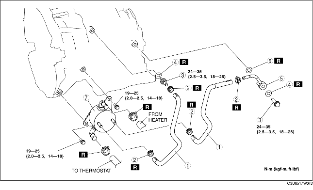

1. Remove the battery duct and battery cover. (See BATTERY REMOVAL/INSTALLATION [LF].)
2. Disconnect the negative battery cable.
3. Remove the aircleaner component. (See INTAKE-AIR SYSTEM REMOVAL/INSTALLATION [LF].)
4. Remove the under cover.
5. Drain the engine coolant. (See ENGINE COOLANT REPLACEMENT.)
6. Drain the ATF into a container. (See AUTOMATIC TRANSAXLE FLUID (ATF) REPLACEMENT.)
7. Disconnect the water hose.
8. Remove in the order indicated in the table.
9. Install in the reverse order of removal.
10. Refill the engine coolant. (See ENGINE COOLANT REPLACEMENT.)
11. Inspect the engine coolant leakage. (See ENGINE COOLANT LEAKAGE INSPECTION.)
12. Add ATF to the specified level. (See AUTOMATIC TRANSAXLE FLUID (ATF) REPLACEMENT.)
13. Inspect for oil leakage from the oil pipes and oil hoses.
14. Inspect for coolant from the hoses.
15. Inspect the ATF level and condition. (See AUTOMATIC TRANSAXLE FLUID (ATF) INSPECTION.)
16. Perform the line pressure test. (See MECHANICAL SYSTEM TEST.)

.
|
1
|
Oil hose
|
|
2
|
Hose clamp
|
|
3
|
Connector bolt
|
|
4
|
Packing
|
|
5
|
Oil pipe
|
|
6
|
Packing
|
|
7
|
Oil cooler
(See Oil Cooler Installation Note.)
|
1. The automatic transaxle oil cooler flushing must be performed whenever a transaxle is removed for service because the existing fluid may be contaminated, and to prevent contamination of new fluid.
2. Follow the instructions in the manufacturer's publication for flushing operation.
1. Apply compressed air to the cooler-side opening, and blow any remaining grime and foreign material from the cooler pipes. Compressed air should be applied for no less than 1 min.
2. Align the marks, and slide the oil hose onto the oil pipe until it is fully seated as shown.
3. Install the new hose clamp onto the hose.
4. Verify that the hose clamp does not interfere with any other components.